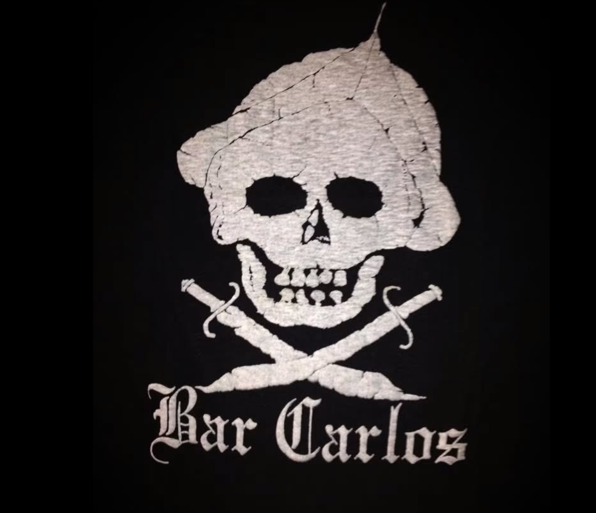

Caffetteria
Il piacere di un buon caffè.

Scopri il menuIl gusto di un buon caffè, il profumo della colazione e il piacere di stare insieme.

Siamo presenti dall'ottobre del 2000 e, in tutti questi anni, abbiamo avuto il piacere di vedere tanti ragazzi crescere, diventare adulti e tornare a trovarci, portando con sé ricordi ed emozioni.
Il bar è stato aperto da Zoriaco Agostino, che con il suo impegno e la sua passione ha dato vita a questa attività. Dopo la sua scomparsa, sua moglie Anna, insieme al figlio Carlo, ha scelto di portare avanti questa storia, custodendo i valori e l'amore con cui tutto è iniziato.
Siamo amanti del nostro lavoro e crediamo soprattutto nel valore delle persone. Ci piace accogliere tutti con un sorriso, ascoltare, dare una mano quando possibile e far sentire ogni cliente come a casa.
Per noi un bar non è soltanto un luogo dove prendere un caffè: è un punto d'incontro, un posto dove nascono amicizie, si condividono momenti e si costruiscono ricordi.
Da ottobre 2000, una storia fatta di famiglia, passione e persone. E ogni giorno siamo felici di continuare a scriverla insieme a voi.
Consulta il menu completo della Caffetteria Carlos, con prodotti, categorie e prezzi sempre aggiornati.
APRI IL MENU COMPLETO LE NOSTRE PROPOSTE
Il piacere di un buon caffè.

Inizia la giornata con gusto.

Una pausa ricca di sapore.
Via Francesco Crispi, 103/C – Taranto